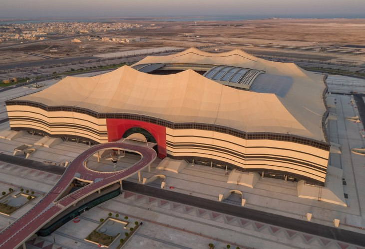

Estadio 974
Estadio con capacidad para 40,000 personas
Construido a partir de containers de transporte y acero modular.
Remarcando el puerto cercano y la historia marítima de Doha.

Estadio Lusail
Estadio sede de la final en 2022
Estadio con capacidad para 80,000 personas
Pieza central de la ciudad de Lusail: una metrópolis de vanguardia

Estadio Internacional Khalifa
Estadio con capacidad para 40,000 personas
Adorado por muchos como el hogar del fútbol en Qatar
Construido en 1976 y transformado para la Copa Mundial de la FIFA Qatar 2022™

Estadio Ciudad De La Educación
Estadio con capacidad para 40,000 personas
Rodeado por algunas de las principales universidades de Qatar
Siendo anfitrión de partidos hasta los cuartos de final
Estadio Al Janoub
Estadio con capacidad para 40,000 personas
En la ciudad sureña de Al Wakrah
Una de las áreas habitadas continuamente más antiguas de Qatar
Estadio Al Thumama
Estadio con capacidad para 40,000 personas
El diseño representa el gahfiya
Un sombrero tradicional usado en todo el Medio Oriente.
Estadio Ahmad Bin Ali
Estadio con capacidad para 40,000 personas
Situado en una de las ciudades más tradicionales de Qatar
Sede del enormemente popular Al Rayyan Sports Club

Estadio Al Bayt
Sede del partido inaugural
Estadio con capacidad para 60,000 personas
Diseño tradicional de tiendas nómadas